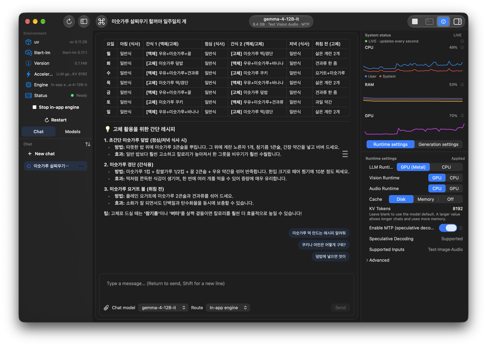
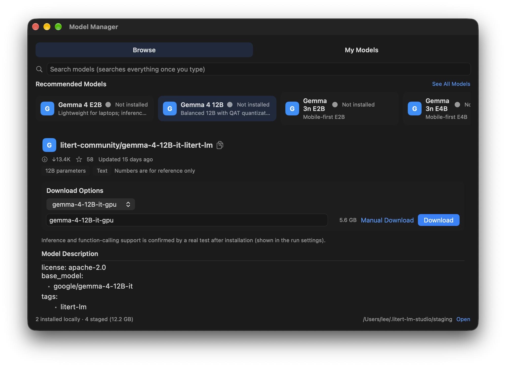
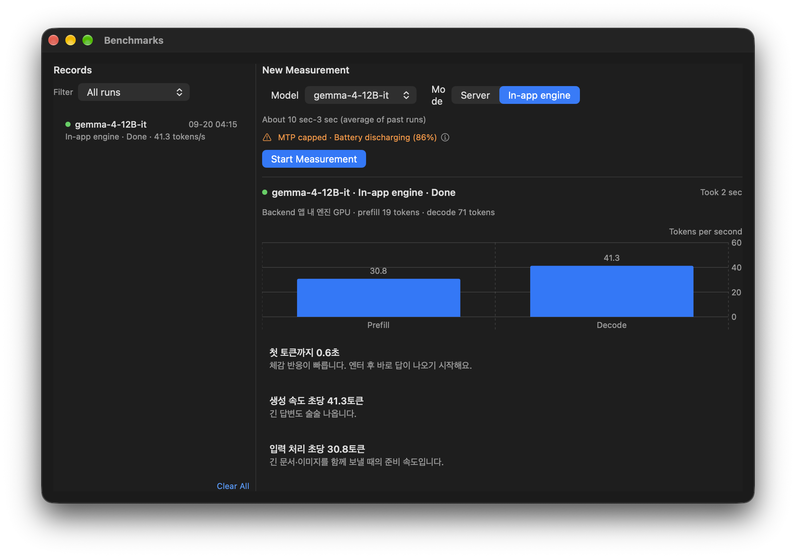

macOS 14+ · Apple Silicon · on-device
LiteRT-LM Studio is a native macOS client for LiteRT-LM — streaming chat with tools, benchmarks, and model management. Everything runs on your machine.
Free · DMG for Apple Silicon · Self-updating via in-app release notes

// why native
SwiftUI throughout, menu-bar resident, and respectful of the platform — with a permission model that asks before any tool touches your system.
Sessions with a table of contents, Vision image attachments, follow-up suggestions, and Markdown rendering.
Web search, shell, calendar, clipboard, and Shortcuts — each off, ask-every-time, or allow-all.
Connect stdio/SSE servers and local skills that join the system prompt.
Run through the litert-lm serve daemon or the in-app engine, picked per message.
Browse Hugging Face, download with pause and resume, install, rename, delete.
A dedicated window with history and AI analysis of your runs.
// look around
Chat, catalog, and benchmarks — all bilingual (English shown, Korean one click away in Settings).


// get running
No Developer ID signature on these builds, so the first launch takes a right-click. After that it behaves like any Mac app — including in-app update checks.
Grab the latest *-macos-arm64.dmg from Releases and drag the app into Applications.
Ad-hoc signed builds trigger Gatekeeper once. Open via right-click and it never asks again.
The app drives the litert-lm CLI. One command, plus models in the standard folder.
# engine + a model home the app already knows uv tool install litert-lm ls ~/.litert-lm/models